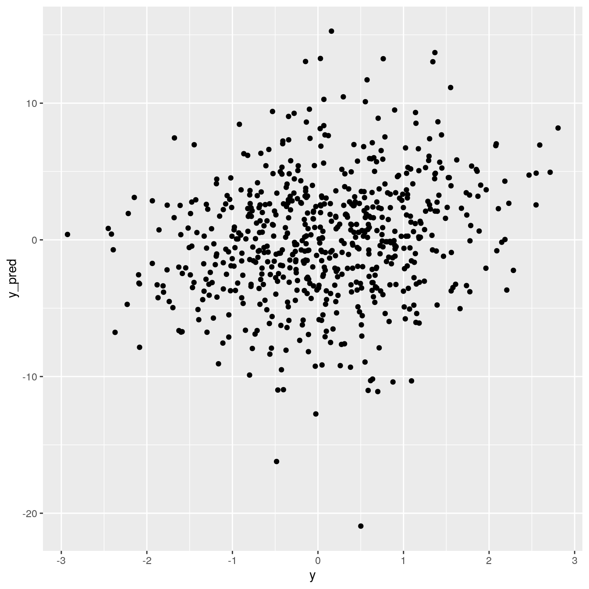

Chapter 12 A two-layer neural network
The following example was converted from PyTorch to rTorch to show differences and similarities of both approaches. The original source can be found here:
Source: https://github.com/jcjohnson/pytorch-examples#pytorch-tensors
12.1 Load the libraries
library(rTorch)
library(ggplot2)
device = torch$device('cpu')
# device = torch.device('cuda') # Uncomment this to run on GPU
torch$manual_seed(0)#> <torch._C.Generator>Nis batch size;D_inis input dimension;His hidden dimension;D_outis output dimension.
12.2 Dataset
We will create a random dataset for a two layer neural network.
N <- 64L; D_in <- 1000L; H <- 100L; D_out <- 10L
# Create random Tensors to hold inputs and outputs
x <- torch$randn(N, D_in, device=device)
y <- torch$randn(N, D_out, device=device)
dim(x)
dim(y)#> [1] 64 1000
#> [1] 64 1012.3 Run the model for 50 iterations
Let’s say that for the sake of time we select to run only 50 iterations of the loop doing the training.
# Randomly initialize weights
w1 <- torch$randn(D_in, H, device=device) # layer 1
w2 <- torch$randn(H, D_out, device=device) # layer 2learning_rate = 1e-6
# loop
for (t in 1:50) {
# Forward pass: compute predicted y, y_pred
h <- x$mm(w1) # matrix multiplication, x*w1
h_relu <- h$clamp(min=0) # make elements greater than zero
y_pred <- h_relu$mm(w2) # matrix multiplication, h_relu*w2
# Compute and print loss; loss is a scalar, and is stored in a PyTorch Tensor
# of shape (); we can get its value as a Python number with loss.item().
loss <- (torch$sub(y_pred, y))$pow(2)$sum() # sum((y_pred-y)^2)
# cat(t, "\t")
# cat(loss$item(), "\n")
# Backprop to compute gradients of w1 and w2 with respect to loss
grad_y_pred <- torch$mul(torch$scalar_tensor(2.0), torch$sub(y_pred, y))
grad_w2 <- h_relu$t()$mm(grad_y_pred) # compute gradient of w2
grad_h_relu <- grad_y_pred$mm(w2$t())
grad_h <- grad_h_relu$clone()
mask <- grad_h$lt(0) # filter values lower than zero
torch$masked_select(grad_h, mask)$fill_(0.0) # make them equal to zero
grad_w1 <- x$t()$mm(grad_h) # compute gradient of w1
# Update weights using gradient descent
w1 <- torch$sub(w1, torch$mul(learning_rate, grad_w1))
w2 <- torch$sub(w2, torch$mul(learning_rate, grad_w2))
}
df_50 <- data.frame(y = y$flatten()$numpy(),
y_pred = y_pred$flatten()$numpy(), iter = 50)
ggplot(df_50, aes(x = y, y = y_pred)) +
geom_point() We see a lot of dispersion between the predicted values, \(y_{pred}\) and the real values, \(y\). We are far from our goal.
12.4 Run it at 100 iterations
Now, we convert the script above to a function, so we could reuse it several times. We want to study the effect of the iteration on the performance of rthe algorithm.
train <- function(iterations) {
# Randomly initialize weights
w1 <- torch$randn(D_in, H, device=device) # layer 1
w2 <- torch$randn(H, D_out, device=device) # layer 2
learning_rate = 1e-6
# loop
for (t in 1:iterations) {
# Forward pass: compute predicted y
h <- x$mm(w1)
h_relu <- h$clamp(min=0)
y_pred <- h_relu$mm(w2)
# Compute and print loss; loss is a scalar stored in a PyTorch Tensor
# of shape (); we can get its value as a Python number with loss.item().
loss <- (torch$sub(y_pred, y))$pow(2)$sum()
# cat(t, "\t"); cat(loss$item(), "\n")
# Backprop to compute gradients of w1 and w2 with respect to loss
grad_y_pred <- torch$mul(torch$scalar_tensor(2.0), torch$sub(y_pred, y))
grad_w2 <- h_relu$t()$mm(grad_y_pred)
grad_h_relu <- grad_y_pred$mm(w2$t())
grad_h <- grad_h_relu$clone()
mask <- grad_h$lt(0)
torch$masked_select(grad_h, mask)$fill_(0.0)
grad_w1 <- x$t()$mm(grad_h)
# Update weights using gradient descent
w1 <- torch$sub(w1, torch$mul(learning_rate, grad_w1))
w2 <- torch$sub(w2, torch$mul(learning_rate, grad_w2))
}
data.frame(y = y$flatten()$numpy(),
y_pred = y_pred$flatten()$numpy(), iter = iterations)
}
df_100 <- train(iterations = 100)
ggplot(df_100, aes(x = y_pred, y = y)) +
geom_point()
Still there are differences between the value and the prediction. Let’s try with more iterations, like 250:

We see the formation of a line between the values and prediction, which means we are getting closer at finding the right algorithm, in this particular case, weights and bias.
Let’s try one more time with 500 iterations:

12.5 Original PyTorch code
This code will not execute. It is shown here for reference. The running code will be written in rTorch.
# Code in file tensor/two_layer_net_tensor.py
import torch
device = torch.device('cpu')
# device = torch.device('cuda') # Uncomment this to run on GPU
# N is batch size; D_in is input dimension;
# H is hidden dimension; D_out is output dimension.
N, D_in, H, D_out = 64, 1000, 100, 10
# Create random input and output data
x = torch.randn(N, D_in, device=device)
y = torch.randn(N, D_out, device=device)
# Randomly initialize weights
w1 = torch.randn(D_in, H, device=device)
w2 = torch.randn(H, D_out, device=device)
learning_rate = 1e-6
for t in range(500):
# Forward pass: compute predicted y
h = x.mm(w1)
h_relu = h.clamp(min=0)
y_pred = h_relu.mm(w2)
# Compute and print loss; loss is a scalar, and is stored in a PyTorch Tensor
# of shape (); we can get its value as a Python number with loss.item().
loss = (y_pred - y).pow(2).sum()
print(t, loss.item())
# Backprop to compute gradients of w1 and w2 with respect to loss
grad_y_pred = 2.0 * (y_pred - y)
grad_w2 = h_relu.t().mm(grad_y_pred)
grad_h_relu = grad_y_pred.mm(w2.t())
grad_h = grad_h_relu.clone()
grad_h[h < 0] = 0
grad_w1 = x.t().mm(grad_h)
# Update weights using gradient descent
w1 -= learning_rate * grad_w1
w2 -= learning_rate * grad_w2____